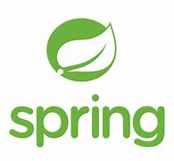

Mybatis 3.5.4
1.1 什么是Mybatis

· MyBatis 是一款优秀的持久层框架
· 它支持自定义 SQL、存储过程以及高级映射。
· MyBatis 免除了几乎所有的 JDBC 代码以及设置参数和获取结果集的工作。
· MyBatis 可以通过简单的 XML 或注解来配置和映射：原始类型、接口和 Java POJO（Plain Old Java Objects，普通老式 Java 对象）为数据库中的记录。
· MyBatis 本是apache的一个开源项目iBatis, 2010年这个项目由apache software foundation 迁移到了google code，并且改名为MyBatis 。
· 2013年11月迁移到Github
· 当前，最新版本是MyBatis 3.5.4 ，其发布时间是2020年2月4日
1.2 持久化
数据持久化
持久化就是将程序的数据在持久状态和瞬时状态转化的过程；
内存：断电即失；
数据库（JDBC），IO文件持久化；
生活例子：冷藏. 罐头。(持久化)；
为什么需要持久化？
断电即失， 有一些对象，不能让他丢掉；
内存太昂贵；
1.3 持久层
Dao层，Service层，Controller层.....
完成持久化工作的代码块；
层界限十分明显；
1.4 为什么需要Mybatis？
核心作用：帮助程序猿将数据存入到数据库中。
传统的JDBC代码太复杂、简化、框架、自动化；
不用Mybatis也可以。学了更容易上手。技术没有高低之分；
层界限十分明显；
优点
层界限十分明显；
简单易学：本身就很小且简单。没有任何第三方依赖，最简单安装只要两个jar文件+配置几个sql映射文件易于学习，易于使用，通过文档和源代码，可以比较完全的掌握它的设计思路和实现。
灵活：mybatis不会对应用程序或者数据库的现有设计强加任何影响。 sql写在xml里，便于统一管理和优化。通过sql语句可以满足操作数据库的所有需求。
sql与程序代码实现解耦合：通过提供DAO层，将业务逻辑和数据访问逻辑分离，使系统的设计更清晰，更易维护，更易单元测试。sql和代码的分离，提高了可维护性。
提供映射标签，支持对象与数据库的orm（Object Relation Mapping）字段关系映射；
提供对象关系映射标签，支持对象关系组建维护；
提供xml标签，支持编写动态sql；
------- 最重要的一点：使用的人多！-----
后端常用框架：Spring SpringMVC SpringBoot...
Spring 4.3.9
1.1 简介

· Spring：春天 —-> 给软件行业带来了春天！
· 2002年，首次推出Spring框架的雏形：interface 21
· Spring框架即以 interface 21 框架为基础，经过重新设计，并不断丰富其内涵，于2004年3月24日，发布了1.0正式版。
· Rod Johnson ，Spring Framework创始人，著名作者。很难想象Rod Johnson的学历，真的让好多人大吃一惊，他是悉尼大学的博士，然而他的专业不是计算机，而是音乐学。
· Spring理念：使现有的技术更加容易使用，本身是一个大杂烩（内容很多），整合现有的技术框架！
· 2013年11月迁移到Github
· 当前，最新版本是MyBatis 3.5.4 ，其发布时间是2020年2月4日
项目架构
· SSH： Struct2 + Spring + Hibernate （全自动化持久化框架）
· SSM：SpringMVC + Spring + Mybatis（半自动化持久化框架，可定制性更高，SQL更加灵活）
下载引导
· 官网：https://docs.spring.io/spring/docs/current/spring-framework-reference/overview.html#overview
· 官方版本下载地址：https://repo.spring.io/release/org/springframework/spring/
· Github：https://github.com/spring-projects/spring-framework/releases
· Spring版本4.3.9 : https://docs.spring.io/spring-framework/docs/4.3.9.RELEASE/spring-framework-reference/html/
1.2 优点
· Spring是一个开源的免费的框架（容器）;
· Spring是一个轻量级的、非入侵式的框架 （引入后，不会对原项目产生影响）;
· 控制反转（IOC），面向切面编程（AOP）（面试必问题）;
· 支持事务的处理，对框架整合的支持;
· 总结一句话：Spring就是一个轻量级的控制反转（IOC），和面向切面编程（AOP）的框架！
SpringMVC
1.1 什么是MVC？
· MVC是模型（Model）、视图（View）、控制器（Controller）的简写，是一种软件规范。
· 将业务逻辑、数据、显示分离的方法来组织代码;
· MVC主要作用是降低视图与逻辑间的双向耦合;
· MVC不是一种设计模式，MVC是一种架构模式。当然不同的MVC存在差异。
MVC解析
· Model（模型）：数据模型，提供要展示的数据，因此包含数据和行为，可以认为是领域模型或JavaBean组件（包含数据和行为），不过现在一般都分离来：Value Object（数据Dao）和服务层（行为Service）。也就是模型提供了模型数据查询和模型数据的状态更新等功能，包含数据业务。
· View（视图）：负责进行模型的展示，一般就是我们见到的用户界面，客户想看到的东西（JSP）。
· Controller(控制器)：接收用户请求，委托给模型进行处理（状态改变），处理完毕后把返回的模型数据返回给视图，有视图负责展示。也就是说控制器做了个调度员的工作。
最经典的MVC就是JSP + Service + JavaBean 的模式
1.2 Spring MVC特点
· 轻量级，简单易学
· 高效，基于请求响应的MVC框架;
· 与Spring兼容性好，无缝结合;
· 功能强大：RestFul、数据验证、格式化、本地化、主题等;
· 简洁灵活 ！
正因为Spring MVC好，简单，便捷，易学，天生和Spring无缝集成（使用SpringIOC和Aop）
使用约定优于配置，能够进行简单的junit测试，支持Restful风格，异常处理，本地化，国际化，数据验证，类型转换，拦截器，等等…所以我们需要学习。